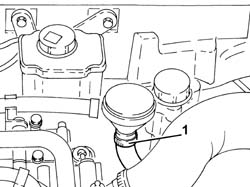
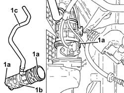

1048A52 AIR INLET PIPE TO TURBO CHARGER - R + R
- Path
- Procedures > 10 ENGINE UNIT > 1048 ENGINE AIR SUPPLY CIRCUIT > 1048A VACUUM AIR CIRCUIT > 1048A52 AIR INLET PIPE TO TURBO CHARGER - R + R
- Kind
- repair procedure (removal / refitting; the operation number is the code)
- Applies to
- engines: 1.9 JTD 16V; all production periods
- Interactive page
- https://sloeber94.github.io/elrnDB-aGt/en/#/125001020
Applies to: engines: 1.9 JTD 16V; all production periods
 Removing
Removing
 Refitting
RefittingProceed with removal
- 1016A10 sound-proofing cover - r + r
Proceed with removal
Proceed with removal
Op. 5530B52 BATTERY DRIP TRAY/SUPPORT - R.R.
1. Loosen the band and disconnect the oil vapour recirculation pipe from separator.

Applies to: engines: 1.9 JTD 16V; all production periods
1. Loosen the bands (1a) and remove turbocharger air intake pipe (1b) complete with oil vapour recirculation pipe (1c) after having released it from the vacuum pipes.

Applies to: engines: 1.9 JTD 16V; all production periods
Refitting
RemovingPlace the turbocharger air inlet pipe complete with oil vapour recirculation pipe in its housing and secure it using the bands.
Connect the oil vapour recirculation pipe to the separator and tighten the band.
Proceed with refitting
Op. 5530B52 BATTERY DRIP TRAY/SUPPORT - R.R..
Proceed with refitting
Proceed with refitting
- 1016A10 sound-proofing cover - r + r
.